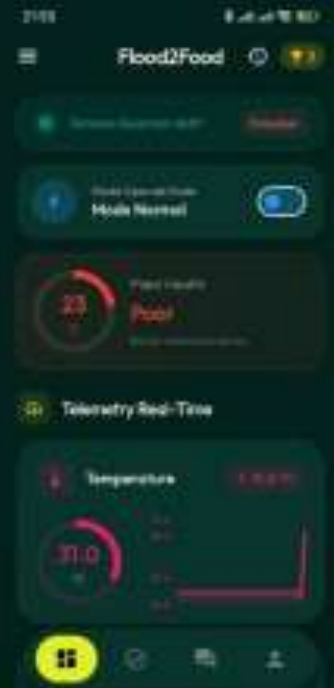
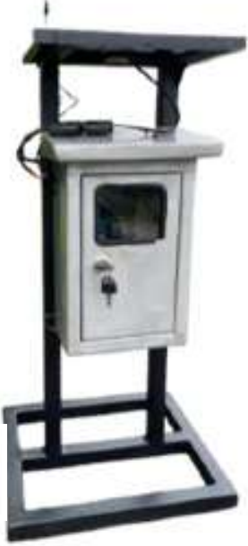
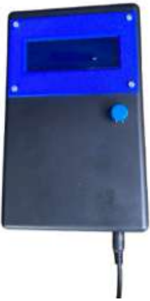
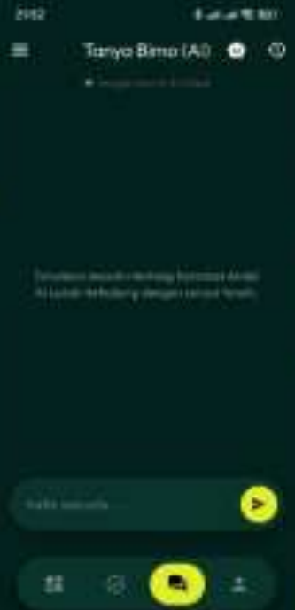

±4.500 ha
Lahan sawah gagal panen
Luas lahan terdampak banjir di wilayah Sumatra. Lahan yang tersisa belum tentu langsung siap ditanami kembali.
PKM-KC 2026 · Prototipe teruji 14 hari di lapangan
Flood2Food membaca tujuh parameter tanah sekaligus — N, P, K, pH, suhu, kelembapan, dan EC — lewat sensor fusion heavy-duty yang tahan lumpur. Datanya dikirim tanpa sinyal seluler lewat LoRa, lalu diterjemahkan menjadi langkah remediasi oleh AI Tanya Bimo di aplikasi Android Anda.

Masalahnya nyata
Banjir mengikis topsoil yang kaya unsur hara, memadatkan pori tanah, dan mengubah keseimbangan hara melalui pencucian serta akumulasi residu. Pulihnya lahan harus dipantau — bukan ditebak.
±4.500 ha
Luas lahan terdampak banjir di wilayah Sumatra. Lahan yang tersisa belum tentu langsung siap ditanami kembali.
30–60 menit
Penyuluh masih memakai alat konvensional yang rentan korosi, bergantung jaringan seluler, dan tidak berkelanjutan.
14 hari
Penanganan tanaman sebaiknya dilakukan dalam 14 hari setelah banjir surut — keputusan butuh data cepat dan akurat.
Solusinya
Sensor Node tertanam di lahan, Gateway menerima di pos pemantauan, dan aplikasi Android menyajikannya di gawai Anda — semuanya bekerja di area blank spot.

Unit mandiri berpanel surya 10 Wp dengan probe heavy-duty tahan lumpur dan kotak panel kedap air.

Konsol portabel berlayar LCD 20×4 dan tombol tactile di pos pemantauan.
Dibangun dengan Flutter & Dart, menghubungkan gawai dengan Gateway lewat BLE.
Fitur unggulan
N, P, K, pH, suhu, kelembapan, dan EC terukur simultan dengan prinsip induksi magnetik dan elektroda antikorosi — stabil di rawa berlumpur.
Data terkirim hingga 10,64 km ke Gateway tanpa WiFi maupun jaringan GSM — cocok untuk blank spot dan pedesaan terbuka.
Panel surya 10 Wp, solar charge controller, dan baterai LiFePO4 menjaga perangkat beroperasi terus-menerus tanpa listrik PLN.
Tanyakan kondisi lahan dalam bahasa sehari-hari, dapatkan rekomendasi dosis pembenah dan tindakan remediasi sesuai data terukur.
Poin, level, dan misi remediasi terstruktur mendisiplinkan pencatatan data serta tindakan pemupukan secara interaktif.
Telemetri real-time berindikator warna dan kurva riwayat hara, terekam juga ke MicroSD sebagai arsip lapangan.
Di dalam aplikasi
Tangkapan layar asli dari aplikasi Flood2Food versi uji lapangan.

Ingin mencobanya sendiri?
Download APKBukti lapangan
Kalibrasi 5–6 Juli 2026 dibanding Soil Test Kit Kementan dan Laboratorium BPTP Sumatra Utara. Tren pemantauan seluruh parameter bergerak menuju rentang ideal.
Mode Deep Sleep, suplai panel surya, dan sensor diperiksa berkala sepanjang uji lapangan 18 Juli – 2 Agustus 2026.
Geser tabel ke samping untuk membandingkan semua kolom.
| Fitur | Flood2Food | Soil Test Kit (PUTS) | IoT konvensional |
|---|---|---|---|
| Metode pengukuran | Otomatis, real-time & terus-menerus | Manual (reaksi kolorimetri) | Otomatis, umumnya 1–4 parameter |
| Ketahanan sensor | Anti-korosi, IP65, stabil di lumpur | Reagen sekali pakai | Rentan korosi pada lumpur |
| Konektivitas data | LoRa — tanpa sinyal seluler | Pencatatan manual | Umumnya WiFi/seluler |
| Rekomendasi tindakan | Otomatis via AI | Manual (buku bagan warna) | Sebagian besar hanya menampilkan angka |
| Perolehan data | Real-time | 30–60 menit | Real-time (lahan normal) |
| Energi operasional | Mandiri — panel surya + baterai | Tidak relevan | Umumnya bergantung listrik PLN |
Manfaat
Menentukan waktu tanam ulang dan dosis pupuk berdasarkan kondisi terukur — menekan risiko gagal panen susulan dan biaya pupuk.
Memetakan dan memantau proses pemulihan lahan secara terstruktur, dengan arsip data yang bisa diverifikasi.
Basis data kondisi lahan untuk prioritas pemulihan, kebijakan darurat pangan, dan distribusi bantuan yang tepat sasaran.
Siap dipakai
Pasang di ponsel Android Anda, hubungkan dengan Gateway Flood2Food_GW lewat Bluetooth, dan pantau kondisi lahan dari gawai — bahkan ketika jaringan seluler tidak tersedia.
Pertanyaan umum
Tidak. Transmisi data dari Sensor Node ke Gateway memakai LoRa, dan Gateway ke ponsel memakai Bluetooth LE — keduanya berkerja tanpa jaringan seluler. Internet hanya diperlukan saat mengunduh aplikasi.
Tujuh parameter sekaligus: Nitrogen (N), Fosfor (P), Kalium (K), pH, suhu, kelembapan, dan Electrical Conductivity (EC) — seluruhnya lewat satu probe sensor fusion 7-in-1.
Unduh file APK, buka file tersebut, lalu izinkan instalasi dari sumber tidak dikenal apabila Android meminta. Setelah terpasang, aktifkan Bluetooth dan pilih perangkat “Flood2Food_GW”.
Ya. Uji lapangan 14 hari di persawahan Pagar Merbau II (18 Juli – 2 Agustus 2026) dengan kalibrasi bersama Soil Test Kit Kementan dan Laboratorium BPTP Sumatra Utara. Galat pengukuran 5% dan seluruh 6 aspek uji dinyatakan lolos.
Petani untuk keputusan pemupukan dan waktu tanam, penyuluh pertanian lapangan (PPL) untuk pemetaan pemulihan lahan, serta pemerintah untuk penentuan prioritas dan distribusi bantuan.
Aplikasi Android dapat diunduh gratis. Perangkat Sensor Node dan Gateway adalah prototipe hasil program Karsa Cipta 2026 yang masih dalam tahap pengembangan lebih lanjut.
Unduh Flood2Food dan ubah pemulihan lahan pascabanjir dari perhitungan manual menjadi keputusan berbasis data.
Download APK